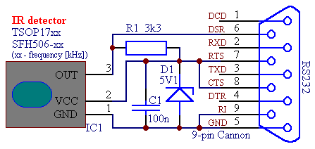
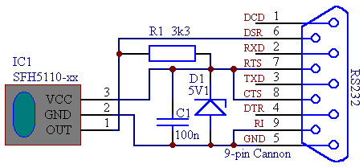
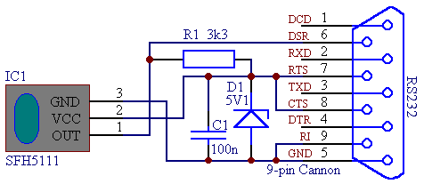
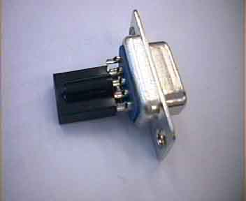
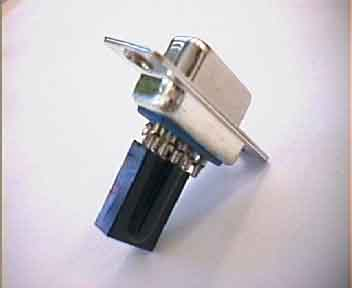
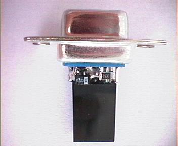
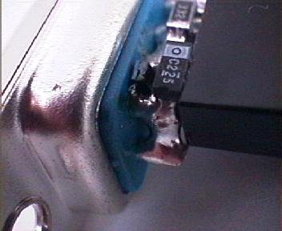
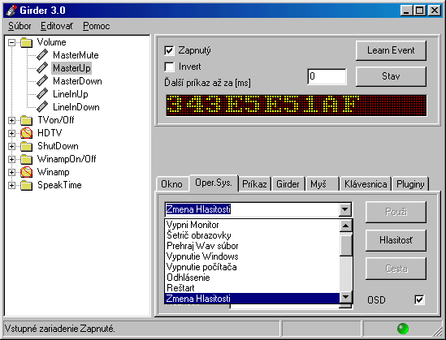
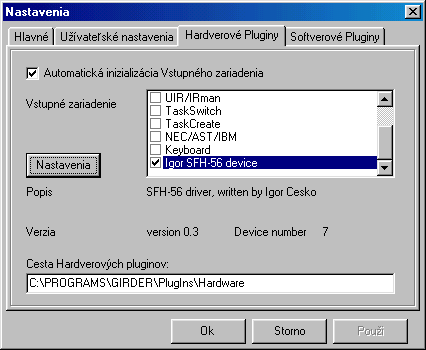
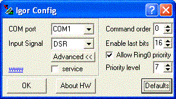

Данный приемник может работать с любыми пультами управления. В Linux работать с ним можно через LIRC и модули ядра lirc_serial и lirc_dev. Я себе такий сделал, схема примитивная, деталей минимум, навесным монтажем можно изготовить на любом куске пластмассы.
Описание на английском.
Remote control of computer - Girder
Try to build very simple remote control of your computer. Computer control is possible with arbitrary infrared remote control (e.g. to TV, VCR, CD, ...). Here introduced scheme is 100% functionable. At design of remote control I accentuate for maximum simplicity of hardware and transfer all intelligence to service software.
On internet is possible to find miscellaneous construction of remote control of computer. Many of them is solved with using of microcontroller (PIC, Atmel), which decode received code from IR-control and transmit it to the computer. Disadvantage of this design is small flexibility when problem happens with atypical remote control code (codes transmitted from IR-controls is not standardized: every manufacturer have its own - although there exists quasi-standards like as RC5, RECS-80, NEC). And this "exotic" remote controls are worldwided. At that time there is need for software update in microcontroler, what is difficult for "common" user (necessity of knowledge of programming mikroconrolers and technical devices - programmers). Other disadvantage is higher price of hardware too.
In my design is hardware very simple and cheap (cca 1US$). All intelligence is made by service software. When problem will happen with atypical code of IR-control then is enough upgrade of software, what every user know sure (download from internet site).
As service software for remotes I choose Girder. It is very good multilanguage program, and as one of few is freeware. It has well-solved support of software and hardware plugins. Therefore I have created my own plugin to Girder, which communicate with hardware part of remote control. Program Girder and my plugin you can obtain in download section.
At the next picture is schematic of hardware:

Or with another type of sensors:

Attention! According to users experiences: Increasing of R1 to value up to 10k may increase receiving sensitivity - using this type of sensors (SFH5110 and SFH5111).

Or in case of problems schematic with better receiving sensitivity.
And here is figure of its physical image (it is very simple):
 
 
And here is in details more pictures (cca180kB).
Don't see to its simplicity. Only plug it into the serial port of computer and execute Girder. In configuration of hardware plugins there is necessary to choose "IgorSFH-56 device" and set correct COM port.
In case of your interest you can see here more details about plugin settings.

 
Sensitivity of receiver is fine. Even if the receiver is plugged directly in serial port on computer back side (which is below the table), is receiving marvelous good (comparison with TV). In choice of sensor frequency (xx in schematic) is necessary to respect matching frequency of IR-transmitter with used receiver. But this choice is not critical: e.g. sensors for 36kHz (SFH56-36; TSOP1736) receive with sufficient sensitivity transmitters at 38kHz too (but 40kHz too). The best way is choosing receiver at 38kHz (SFH56-38; TSOP1738), which are receiving with good sensitivity all remote controls.
Most of remote controls operate at 38kHz, some at 36kHz and some (mostly Sony) at 40kHz.
There is appropriate to read Girder's help (exist in several languages) .
Description of function:
Circuit uses integrated infrared receiver used for receiving of modulated signal. This chip contains circuits needed for receiving and demodulation of infrared signal. From its output goes only pure digital signal (envelope curve of amplitude modulated transmitted signal). Available are receivers of types SFH56-xx a TSOP17xx (tested). Chips SFH56-xx are only in bargain sale (end of production). Number "xx" mean used frequency for receiving. The persons concerned about details of this chips, they can find it in datasheets on internet.
Integrated circuit is supplied directly from computer serial port - from pin RTS. Stabilization of voltage to 5V makes Zener diode D1. It is without limiting resistor, because it used fact, that serial port has current limiting cca 10mA. In first version was used limiting resistor, but there was problem with insufficient voltage in case of notebooks using. In notebooks are signal levels about +/-6V and voltage loss on resistor causes receiving unreliability (same reason is impossibility to use stabilization with circuits of type 7805, which have min. voltage loss about 2V).
Capacitor C1 is for filtration (flow peaks). Resistor R1 is pull-up according to recommendation of manufacturer of TSOP17xx. Output of receiver is connected to signal DSR of serial port, where is software decoded.
Service driver is designed as plug-in module "IgorPlug.dll" in program Girder, to which it send received code. Girder in the next executes function, which was choosed. Assigning of transmitted code to given action is going through so-called learning by following: In program Girder we create given action and then we push button "Learn Event" (see figure). In the next we push button on IR-control, transmitted code is received and assign to given action. Functionality of action we test by pushing the same button on remote control.
Possible replacements of IR detector (in order of its applicability):
The greatest domain of remote control application is certainly comfortable control PC and in PC add-on devices: TV and radio cards, CD, DVD, WinAmp ... For this purpose was this device developed and mostly used too (who isn't lazy for get up and go to computer, in which just now is going movie?)
But good property of all programs of type Girder is possibility to transfer application which was written only for user interface by mouse and keyboard in to environment of industry automatization. For example Girder makes possible remote controlling through TCP/IP network too. There is possible to choice communication medium and then reduce the protocol as we need. After this manner we obtain computer with powerful software, which is located at controlled place of work, but its control may be done from another place and especially with more simple hardware (reduced keyboard or microcontroller). From software point of view is only necessary to assign to external commands theirs competent actions on PC (key pushing, mouse movement and clicking, executing program etc.). So program, which wasn't dedicated for example for its controlling through RS232 will become by this manner externally controlled. Requirement is only using of operating system Windows (but there are versions and projects for Linux too).
Space for another applications I let for readers, but there are many : types of security systems of buildings , controlling on out-of-reach places by embedded PCs , wireless extension of control etc.
{kind=link}
{kind=link}